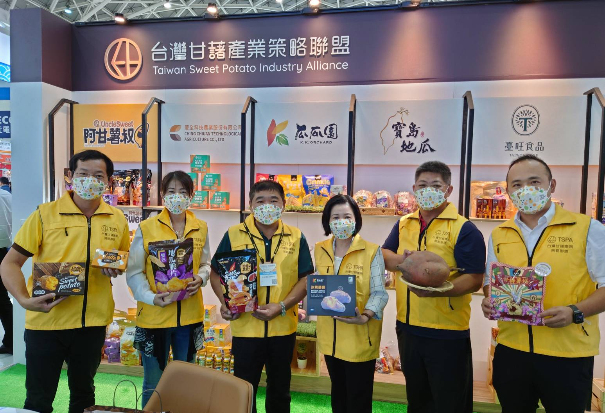
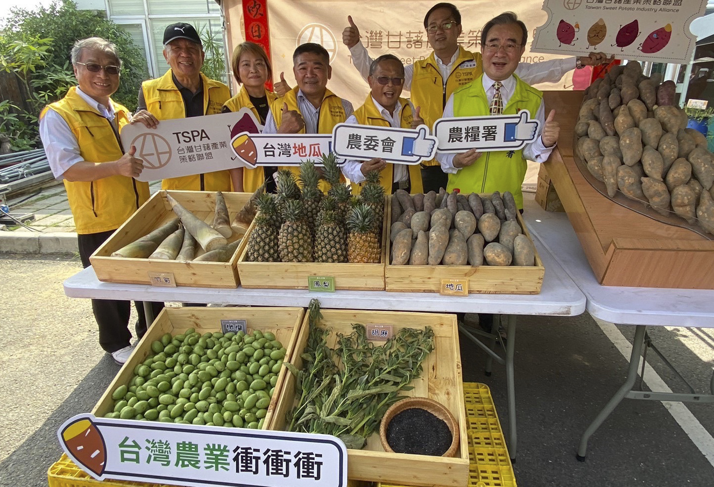

舉辦2022甘藷文化季（圖／農糧署）

甘藷文化季系列活動（圖／農糧署）
本聯盟成員甘藷總種植面積約為2,870公頃，佔台灣整體甘藷種植面積1/3。共計82,500公噸鮮薯。以分配比例2成計算，本年度輔導外銷產量約16,500公噸。
本聯盟成員甘藷總種植面積約為2,870公頃，佔台灣整體甘藷種植面積1/3。共計82,500公噸鮮薯。以分配比例4成計算，本年度國內行銷產量約33,000公噸。
本聯盟成員甘藷總種植面積約為2,870公頃，佔台灣整體甘藷種植面積1/3。共計82,500公噸鮮薯。以分配比例4成計算，本年度輔導加工產量約33,000公噸。
1.國內食品展及國外行銷展售會各1場(備註:疫情影響無法出國，國外行銷展售會以台北國際展舉辦，國內食品展以高雄食品展舉辦)。
2.國內行銷展售會計4場。
3.開發甘藷多元化加工品計5項加工品及改善包裝
4.辦理創意料理大賽1場。
5.辦理甘藷生態教育活動10場次。
6.開發創新地瓜清洗廢液完全回收再利用計畫500公噸。
7.辦理格外品再利用循環計畫。
8.辦理甘藷產業年會1場。
9.甘藷地區性嘉年華會1場。
10.地標農產文創展售會1場。